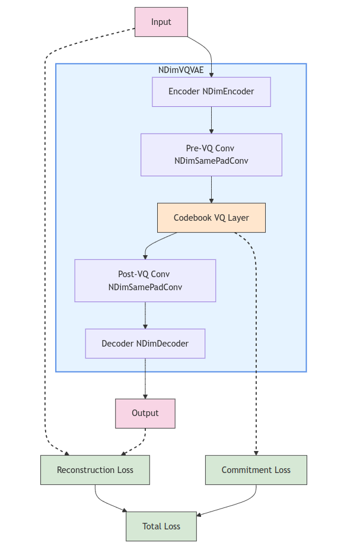

nd_vq_vae


PyTorch Implementation of the N-Dimensional VQ-VAE by AdityaNG

Install it from PyPI
pip install nd_vq_vae
Cite
Cite our work if you find it useful!
@article{NG2024D3Nav,
title={D³Nav: Data-Driven Driving Agents for Autonomous Vehicles in Unstructured Traffic},
author={Aditya NG and Gowri Srinivas},
journal={The 35th British Machine Vision Conference (BMVC)},
year={2024},
url={https://bmvc2024.org/}
}
Development
Read the CONTRIBUTING.md file.